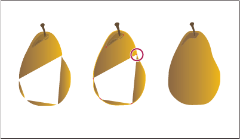

Painting methods
Illustrator provides two methods of painting: assigning a fill, stroke, or both to an entire object, and converting the object to a Live Paint group and assigning fills or strokes to the separate edges and faces of paths within it.
Paint an object
After you draw an object, you assign a fill, stroke, or both to it. You can then draw other objects that you can paint similarly, layering each new object on top of the previous ones. The result is something like a collage made out of shapes cut from colored paper, with the look of the artwork depending on which objects are on top in the stack of layered objects.
For a video on using brushes, see www.adobe.com/go/vid0044.
Paint a Live Paint group
With the Live Paint method, you paint more like you would with a traditional coloring tool, without regard to layers or stacking order, which can make for a more natural workflow. All objects in a Live Paint group are treated as if they are part of the same flat surface. This means you can draw several paths and then color separately each area enclosed by these paths (called a face). You can also assign different stroke colors and weights to portions of a path between intersections (called an edge). The result is that, much like a coloring book, you can fill each face and stroke each edge with a different color. As you move and reshape paths in a Live Paint group, the faces and edges automatically adjust in response.

For a video on using Live Paint, see www.adobe.com/go/vid0042. For a video on painting techniques with the Paintbrush tool, see www.adobe.com/go/vid0038.